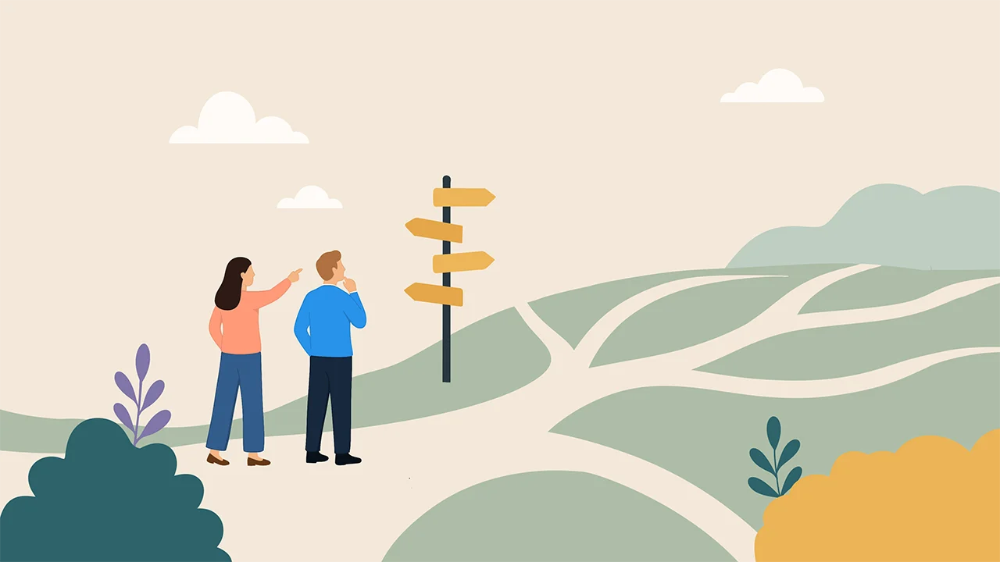

Bachelorprosjekt · Fullstack
Komplett bookingplattform for en karriereveileder.
Jeg utviklet frontend, backend, database og integrasjoner. Løsningen inkluderer bookingflyt, administrasjonspanel, autentisering, SMS-verifisering og serverløs arkitektur i AWS.